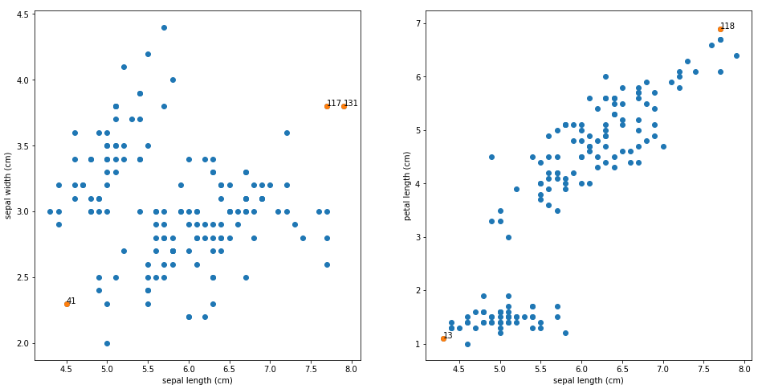

Lookout: A Method to Interpret Outliers
I recently co-supervised a master's project at Volvo which aimed to create a Data Cleaning Tool
(the tool can be found here).
Given that the data we encounter in practice often contains errors such as misspellings,
inconsistent classes, infeasible values etc, there is a need for tools that provide easy and
intuitive ways to clean the data.
While detecting and fixing, e.g, misspellings can be relatively easy, not all errors are as easily fixed. One such error is outliers. The issue with outliers is that it might not always be clear if these outliers represent some aspect of the data which we have not considered (a patient with a relatively normal weight but with an abnormal blood pressure could indicate that this patient is suffering from a hidden disease), or if they are complete noise and should be disregarded (measurements which are nonsense due to electrical failures in the measurement devices). Thus detecting outliers and removing them is not always the optimal solution to data cleaning, we also need to understand why a given data point was classified as an outlier. Otherwise we might remove parts of the data that can be important for our end-goal.
While there exists a few different methods for explaining outliers (see [1], [2], [3]), the one that seemed especially interesting was LookOut. Some benefits with LookOut are:
While detecting and fixing, e.g, misspellings can be relatively easy, not all errors are as easily fixed. One such error is outliers. The issue with outliers is that it might not always be clear if these outliers represent some aspect of the data which we have not considered (a patient with a relatively normal weight but with an abnormal blood pressure could indicate that this patient is suffering from a hidden disease), or if they are complete noise and should be disregarded (measurements which are nonsense due to electrical failures in the measurement devices). Thus detecting outliers and removing them is not always the optimal solution to data cleaning, we also need to understand why a given data point was classified as an outlier. Otherwise we might remove parts of the data that can be important for our end-goal.
While there exists a few different methods for explaining outliers (see [1], [2], [3]), the one that seemed especially interesting was LookOut. Some benefits with LookOut are:
- It is method agnostic, i.e, we can still use our favorite outlier detecting method and still obtain explanations.
- It explains outliers in terms of the original features which makes it easily interpretable.
- It is easy to implement (My implementation can be found on github).
LookOut
LookOut bases its method on the fact that 2-dimensional plots are interpretable
and that an analyst has limited attention. For some analysts, a data set with
10 features might be considered low-dimensional. But just having 10 features gives
45 2-dimensional plots that can be created from all the different feature pairs.
For an analyst to try and stare through 45 plots to detect and understand outliers
is quite an effort. LookOut instead proposes that we should work with a
plot budget, i.e, we should only display a few number of plots
which the analyst can easily study. Given a set of outliers in the data,
these plots are chosen by finding the feature pairs that maximize the
outlier score for the outliers. In addition, in order to make it easy
for the analyst to explain a given outlier, each outlier is only
explained through a single plot so that there are not multiple
explanations for why it is deemed an outlier.
Mathematically we can formulate this as an optimization problem. If we have a set of outliers \(\mathcal{A}\) we seek to explain, then given that the plot budget is denoted by \(b\), the set of all possible feature pair plots as \(\mathcal{P}\), the set of feature-pair plots to display as \(S\) and the outlier score for outlier \(i\) when we only consider the feature-pair \(j\) as \(s_{i,j}\), we can formulate the optimization problem as $$\max_{S \subset \mathcal{P}, |S| = b} f(S) = \sum_{a_i \in \mathcal{A}} \max_{p_j \in S} s_{i,j}.$$ While obtaining the optimal solution is NP-hard, \(f(S)\) can be shown to be sub-modular, non-negative and non-decreasing. These functions allow for efficient greedy optimization routines where we have a guarantee of obtaining a no worse solution than that of 63% of the optimal one. Thus by using a greedy scheme, we can obtain an approximate solution as follows
Mathematically we can formulate this as an optimization problem. If we have a set of outliers \(\mathcal{A}\) we seek to explain, then given that the plot budget is denoted by \(b\), the set of all possible feature pair plots as \(\mathcal{P}\), the set of feature-pair plots to display as \(S\) and the outlier score for outlier \(i\) when we only consider the feature-pair \(j\) as \(s_{i,j}\), we can formulate the optimization problem as $$\max_{S \subset \mathcal{P}, |S| = b} f(S) = \sum_{a_i \in \mathcal{A}} \max_{p_j \in S} s_{i,j}.$$ While obtaining the optimal solution is NP-hard, \(f(S)\) can be shown to be sub-modular, non-negative and non-decreasing. These functions allow for efficient greedy optimization routines where we have a guarantee of obtaining a no worse solution than that of 63% of the optimal one. Thus by using a greedy scheme, we can obtain an approximate solution as follows
- Fit an outlier detection method to all possible feature pairs.
- For i=1:b
- Add the feature-pair \(p \in \mathcal{P}\) that maximizes the marginal gain $$f(S \cup \{p\}) - f(S)$$
- Remove the added feature pair \(p\) from \(\mathcal{P}\).
Results
While the authors convincingly demonstrate the method
on some examples in the article, I wanted to try it on some
other data sets to get a feel for the method on my own. I chose
to try it on the classical Fisher Iris data set, a Forest Fire
data set and a Bike Sharing data set. The results are as follows
Iris data
Iris data is a classical machine learning data set of the length and
width measurements of the sepals and petals of three different kinds
of Iris flowers. By running LookOut and choosing the plot budget to
2, the 5 most extreme outliers can be explained as follows (outliers are marked in orange):

We see that the outliers are (not surprisingly) explained by unusually
extreme measurements for the two selected features.
Forest Fires data
This data set consists of measurements related to forest fires in northern Portugal.
The features consist of information related to position,
weather and moisture conditions in the forests.
The features that we will need to understand for the ensuing plots are
- rain: outside rain in mm/m2
- FFMC - FFMC index from the FWI system (a measure of moisture in forest litter)
- wind: wind speed in km/h
- Y: y-axis spatial coordinate within the Montesinho park map
- temp: temperature in Celsius degrees
- Observation 499 was deemed an outlier because of the unusual rain amount that fell during that forest fire.
- Observation 65 and 75 were deemed outliers due to the unusual low temperatures in those regions of the parks.
Bike sharing data
This data set consists of information related to a bike rental
during the period 2011- 2012. The features are related to information
for each specific day such as weather, holiday, temperature, time of year etc.
The features that we will need to understand for the ensuing plots are
- weathersit: Scale 1 - 4 with 1 being few clouds and 4 being heavy rain.
- holiday: Binary, whether it is holiday or not.
- yr: Binary, 0 for 2011, 1 for 2012.
- atemp: Normalized temperature in Celcius (the description says feeling temperature which I interpret as the experienced temperature).
- windspeed: Normalized wind speed.
Conclusion
Being able to reason and argue for why an observation is deemed an outlier
is an important step on the path to understanding our data sets.
LookOut provides a method to interpret outliers by finding which
feature pairs that can provide the best explanation for why the
observations were deemed as abnormal. While the obtained
explanations can be difficult to interpret for some
data sets, it can provide meaningful explanations in many other cases.
Ultimately, it is a method that I will consider using in my future data analysis.